Module 8 Introduction to Data Visualization
Module Objectives
- Create statistical charts in SAS and R
- Use the grammar of graphics to describe different types of charts and graphs
- Use the grammar of graphics to create layered graphics and highlight different features of a data set
- Modify or construct alternate charts showing the same material with better readability and accessibility
There are a lot of different types of charts, and equally many ways to categorize and describe the different types of charts.

Hopefully by the end of this, you will be able to at least make the charts which are most commonly used to show data and statistical concepts.
This is going to be a fairly extensive chapter (in terms of content) because I want you to have a resource to access later, if you need it. But, this is also the chapter where we really start to focus on R instead of SAS. Even the hardcore SAS users I know (in this department and others) go into R when they want to make a publication-quality chart.
Visualization and statistical graphics are also my research area, so I’m probably going to be a bit more passionate about this chapter, which means there’s probably going to be more to read. Sorry about that in advance. I’ll do my best to indicate which content is actually mission-critical and which content you can skip if you’re not that interested.
8.1 Why do we create graphics?
The greatest possibilities of visual display lie in vividness and inescapability of the intended message. A visual display can stop your mental flow in its tracks and make you think. A visual display can force you to notice what you never expected to see. (“Why, that scatter diagram has a hole in the middle!”) – John Tukey, Data Based Graphics: Visual Display in the Decades to Come
Charts are easier to understand than raw data. (more details inside)
When you think about it, data is a pretty artificial thing. We exist in a world of tangible objects, but data are an abstraction - even when the data record information about the tangible world, the measurements are a way of removing the physical and transforming the “real world” into a virtual thing. As an artificial entity, it can be hard to wrap our heads around what our data contain. The solution to this is to transform our data back into something that is “tangible” in some way – if not physical and literally touch-able, at least something we can view and “wrap our heads around”.
Consider this thought experiment: You have a simple dataset - 2 variables, 500 observations. You want to get a sense of how the variables relate to each other. You can do one of the following options:
- Print out the dataset
- Create some summary statistics of each variable and perhaps the covariance between the two variables
- Draw a scatterplot of the two variables
Which one would you rather use? Why?
Our brains are very good at processing large amounts of visual information quickly - it’s important to be able to e.g. survey a field and pick out the tiger that might eat you. When we present information visually, in a format that can leverage our visual processing abilities, we offload some of the work of understanding the data to a chart that organizes it for us. You could argue that printing out the data is a visual presentation, but it requires that you read that data in as text, which we’re not nearly as equipped to process quickly (and in parallel).
In addition, I’ve found that it’s a lot easier to talk to non-experts about complicated statistics using visualizations. Moving the discussion from abstract concepts to concrete shapes and lines keeps people who are potentially already math or stat phobic from completely panicking and tuning out.8.2 General approaches to creating graphics
There are two general approaches to generating statistical graphics computationally:
Manually specify the plot that you want, doing the preprocessing and summarizing before you create the plot.
Describe the relationship between the plot and the data, using sensible defaults that can be customized for common operations.
In the introduction to The Grammar of Graphics, Leland Wilkinson suggests that the first approach is what we would call “charts” - pie charts, line charts, bar charts - objects that are “instances of much more general objects”. He’s arguing for the virtues of the 2nd approach – the grammar of graphics, so his opinion is hardly unbiased, but it is an interesting distinction. His argument is that elegant graphical design means we have to think about an underlying theory of graphics, rather than how to create specific charts.
Base R graphics and the original SAS graphics engine fall firmly into the first camp. ggplot2 was designed using the philosophy of the grammar of graphics, and is still the primary place that people learn about the grammar of graphics in statistics. The SAS ODS Graphics Engine25 falls somewhere in between the two approaches - it provides some sensible defaults, but its design isn’t rooted in the philosophy of the grammar of graphics, so if (as some SAS manuals have claimed) there is a similarity between the two, it’s functional (in my opinion) and not because of an underlying similarity in the design strategy.
In either case, you’re going to learn how to make graphics by finding sample code, changing that code to match your dataset, and tweaking things as you go. That’s the best way to learn this, and while option 2 does have a structure and some syntax to learn, once you’re familiar with the principles, you’ll still want to learn graphics by doing it.
There are other graphics systems in R (namely, lattice, plus some web-based rendering engines) that you could explore, but it’s far more important that you know how to functionally create plots in R and/or SAS. I don’t recommend you try to become proficient in all of them. Pick one (two at most) and get to know that, then google for the rest.
Before we delve into the grammar of graphics, let’s motivate the philosophy using a simple task. Suppose we want to create a pie chart using some data. Pie charts are terrible, and we’ve known it for 100 years, so in the interests of showing that we know that pie charts are awful, we’ll also create a stacked bar chart, which is the most commonly promoted alternative to a pie chart. We’ll talk about what makes pie charts terrible at the end of this module.
R base graphics example
# Setup the data
library(tidyverse)
poke <- read_csv("data/pokemon_ascii.csv", na = '.') %>%
mutate(generation = factor(generation))Let’s start with what we want: for each generation, we want the total number of pokemon.
To get a pie chart, we want that information mapped to a circle, with each generation represented by an angle whose size is proportional to the number of pokemon in that generation.
# Create summary of pokemon by type
tmp <- poke %>%
group_by(generation) %>%
count()
pie(tmp$n, labels = tmp$generation)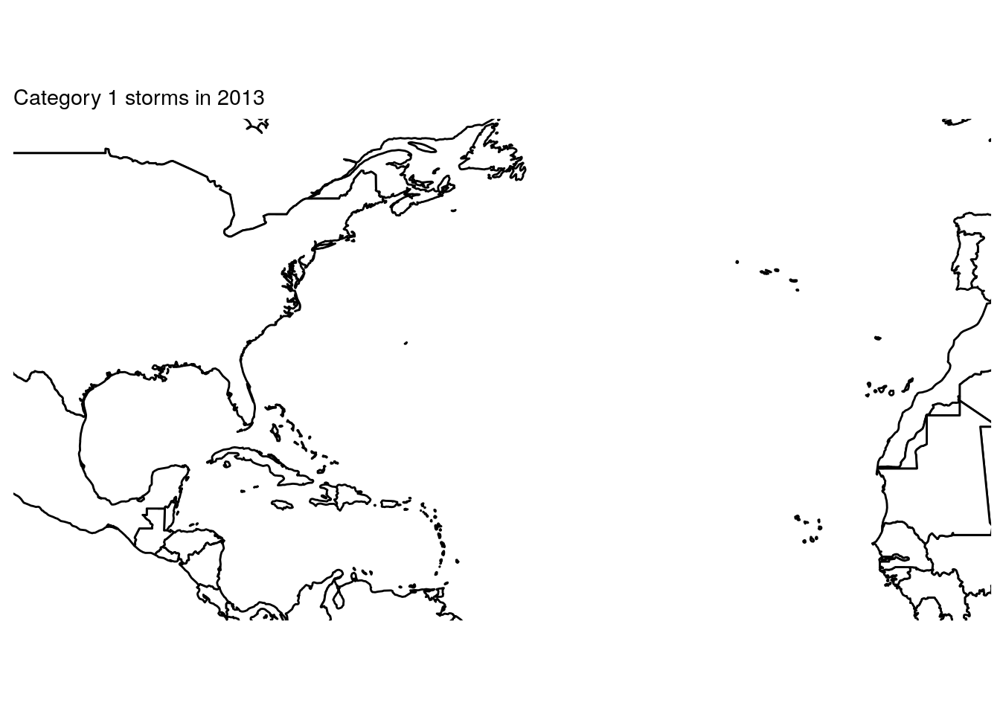
# with(., <base command>) let you use the pipe easily with a base R command
# that is otherwise not pipe friendly, e.g.
# with(tmp, pie(n, labels = generation))We could alternately make a bar chart and stack the bars on top of each other. This also shows proportion (section vs. total) but does so in a linear fashion.
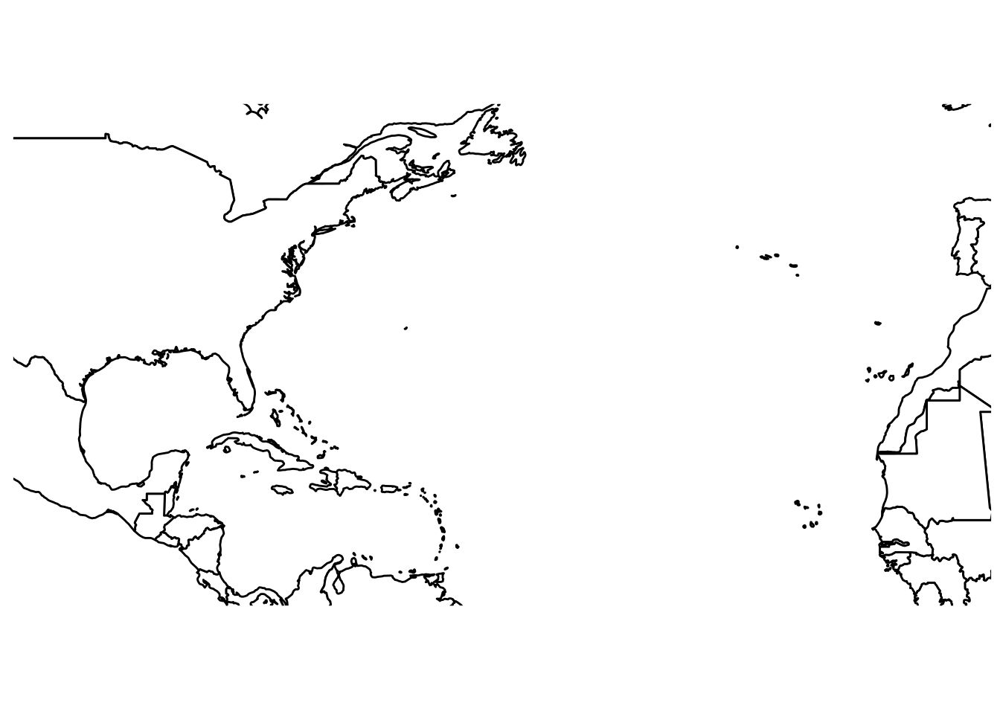R ggplot2 graphics
In ggplot2, we start by specifying which variables we want to be mapped to which features of the data.
In a pie or stacked bar chart, we don’t care about the x coordinate - the whole chart is centered at (0,0) or is contained in a single “stack”. So it’s easiest to specify our x variable as a constant, "". We care about the fill of the slices, though - we want each generation to have a different fill color, so we specify generation as our fill variable.
Then, we want to summarize our data by the number of objects in each category - this is basically a stacked bar chart. Any variables specified in the plot statement are used to implicitly calculate the statistical summary we want – that is, to count the rows (so if we had multiple x variables, the summary would be computed for both the x and fill variables). ggplot is smart enough to know that when we use geom_bar, we generally want the y variable to be the count, so we can get away with leaving that part out. We just have to specify that we want the bars to be stacked on top of one another (instead of next to each other, “dodge”).

If we want a pie chart, we can get one very easily - we transform the coordinate plane from cartesian coordinates to polar coordinates. We specify that we want angle to correspond to the “y” coordinate, and that we want to start at \(\theta = 0\).
ggplot(aes(x = "", fill = generation), data = poke) +
geom_bar(position = "stack") +
coord_polar("y", start = 0)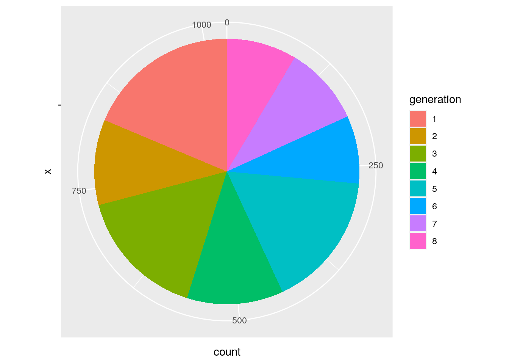
Notice how the syntax and arguments to the functions didn’t change much between the bar chart and the pie chart? That’s because theggplot package uses what’s called the grammar of graphics, which is a way to describe plots based on the underlying mathematical relationships between data and plotted objects. In base R and SAS, different types of plots will have different syntax, arguments, etc., but in ggplot2, the arguments are consistently named, and for plots which require similar transformations and summary observations, it’s very easy to switch between plot types by changing one word or adding one transformation.
SAS Examples
Original SAS graphics engine
libname classdat "/home/susan/Projects/Class/unl-stat850/2020-stat850/sas/";
/* This step creates a constant variable in the data frame,
so that all generations can be stacked in one bar */
DATA poketmp;
SET classdat.poke;
i = 1;
RUN;
PROC GCHART data=poketmp;
pie generation / other = 0;
RUN;
PROC GCHART data=poketmp;
VBAR i / SUBGROUP = generation;
RUN;
QUIT;
/* Note that if you forget the quit statement using SASMarkdown, things dont work well */ODS Graphics
Note: This is a terrible example in SAS because there isn’t an easy way to create a pie chart26. We have to resort to using SAS Graph Template Language.
6 libname classdat
6 ! "/home/susan/Projects/Class/unl-stat850/2020-stat850/sas/";
NOTE: Libref CLASSDAT was successfully assigned as follows:
Engine: V9
Physical Name:
/home/susan/Projects/Class/unl-stat850/2020-stat850/sas
7
8 DATA poketmp;
9 SET classdat.poke;
10 i = 1;
11 RUN;
NOTE: There were 1028 observations read from the data set CLASSDAT.POKE.
NOTE: The data set WORK.POKETMP has 1028 observations and 50 variables.
NOTE: DATA statement used (Total process time):
real time 0.00 seconds
cpu time 0.01 seconds
12
13 /* Define a pie chart template */
14 PROC TEMPLATE;
15 DEFINE STATGRAPH WORK.simplepie;
16 BEGINGRAPH;
17 LAYOUT REGION;
18 PIECHART category=generation;
19 ENDLAYOUT;
20 ENDGRAPH;
21 END;
ERROR: Template 'Work.Simplepie' was unable to write to template store!
22 RUN;
NOTE: PROCEDURE TEMPLATE used (Total process time):
real time 0.00 seconds
cpu time 0.00 seconds
WARNING: Errors were produced.
NOTE: The SAS System stopped processing this step because of errors.
23
24 /* Make the pie chart */
25 PROC SGRENDER data=classdat.poke template=WORK.simplepie;
26 RUN;
NOTE: There were 1028 observations read from the data set CLASSDAT.POKE.
NOTE: PROCEDURE SGRENDER used (Total process time):
real time 1.77 seconds
cpu time 0.04 seconds
27
28 /* Use SGPLOT to make a stacked bar chart */
29 PROC SGPLOT data=poketmp;
30 VBAR i / GROUP = generation;
31 RUN;
NOTE: Since no format is assigned, the numeric category variable will use
the default of BEST6.
NOTE: PROCEDURE SGPLOT used (Total process time):
real time 0.19 seconds
cpu time 0.02 seconds
NOTE: There were 1028 observations read from the data set WORK.POKETMP.
ERROR: Errors printed on page 1.If only because it provides us with a place to start (because otherwise, we would just work through a graph gallery or two, and that’s boring), we’ll talk first about the general idea behind the grammar of graphics. For each concept, I’ll provide you first with the ggplot grammar of graphics code, and then, where it is possible to replicate the chart easily in base R or SAS ODS graphics, I will provide code for that as well - so that you can compare the approaches, but also so that you get a sense for what is easy and what is possible in each plotting system.
8.3 The Grammar of Graphics
In the grammar of graphics, a plot consists of several mostly independent specifications:
- aesthetics - links between data variables and graphical features (position, color, shape, size)
- layers - geometric elements (points, lines, rectangles, text, …)
- transformations - transformations specify a functional link between the data and the displayed information (identity, count, bins, density, regression). Transformations act on the variables.
- scales - scales map values in data space to values in the aesthetic space. Scales change the coordinate space of an aesthetic, but don’t change the underlying value (so the change is at the visual level, not the mathematical level).
- coordinate system - e.g. polar or cartesian
- facetting - facets allow you to split plots by other variables to produce many sub-plots.
- theme - formatting items, such as background color, fonts, margins…
We can contrast this with other plotting systems (e.g. Base R), where transformations and scales must be handled manually, there may be separate plotting systems for different coordinate systems, etc.
Functionally, the biggest difference between the two systems is that in the grammar of graphics system (as implemented in ggplot2), we work with a full tabular dataset. So like the rest of the tidyverse, ggplot2 will allow you to reference bare column names as if they were variables, so long as you’ve passed in the data set to the data = argument.27
Let’s get the data set up in both SAS and R
if (!"classdata" %in% installed.packages()) devtools::install_github("heike/classdata")
# A package of data sets which are useful for class demonstrations
library(classdata)
data(happy) # you'll use this for try it out sections
data(fbi)
fbiwide <- fbi %>%
select(-Violent.crime) %>%
pivot_wider(names_from = Type, values_from = Count) %>%
# Rename variables
rename(Murder = Murder.and.nonnegligent.Manslaughter,
Assault = Aggravated.assault,
Larceny = Larceny.theft,
Auto.theft = Motor.vehicle.theft) %>%
mutate(Rape = as.numeric(Rape))
# Write a csv out to a file to read into sas
write_csv(happy, "data/happy.csv", na = ".")
write_csv(fbi, "data/fbi.csv", na = ".")
write_csv(fbiwide, "data/fbiwide.csv", na = ".")libname classdat "/home/susan/Projects/Class/unl-stat850/2020-stat850/sas/";
PROC IMPORT datafile = "data/happy.csv" out=classdat.happy
DBMS = CSV
REPLACE;
GETNAMES = YES;
GUESSINGROWS = 5000;
RUN;
PROC IMPORT datafile = "data/fbi.csv" out=classdat.fbi
DBMS = CSV
REPLACE;
GETNAMES = YES;
GUESSINGROWS = 5000;
RUN;
PROC IMPORT datafile = "data/fbiwide.csv" out=classdat.fbiwide
DBMS = CSV
REPLACE;
GETNAMES = YES;
GUESSINGROWS = 2000;
RUN;8.3.1 Demonstration: Aesthetic Mappings and Basic Plots
A basic scatterplot is a combination of an aesthetic mapping for x and y (position), combined with the specification that the geometric object to be displayed is a point. Without any of the components (x, y, geom_point) you don’t have a scatterplot.
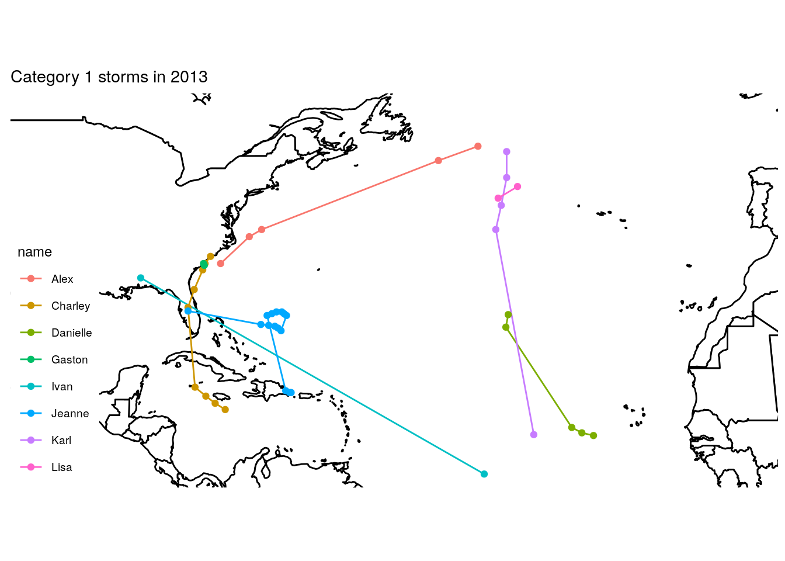
Base R
plot(x = Burglary, y = Murder, data = fbiwide) # this doesn't work
Error in plot(x = Burglary, y = Murder, data = fbiwide): object 'Burglary' not found
plot(x = fbiwide$Burglary, y = fbiwide$Murder) # you can use numeric vector arguments
SAS ODS Graphics
The workhorse of the ODS graphics engine is SGPLOT.
libname classdat "/home/susan/Projects/Class/unl-stat850/2020-stat850/sas/";
PROC SGPLOT data=classdat.fbiwide;
SCATTER x = Burglary y = Murder;
RUN;
We can add a title to the plot
 You can also add labels using
You can also add labels using xlab() and ylab(). We’ll talk more about how to make fine-grained modifications of axis scales later, but the shorthand commands for changing the title and labels are convenient.
SAS ODS Graphics
libname classdat "/home/susan/Projects/Class/unl-stat850/2020-stat850/sas/";
PROC SGPLOT data=classdat.fbiwide;
TITLE "Murders and Assaults";
SCATTER x = Assault y = Murder;
RUN;We can also modify the appearance of the plotted objects
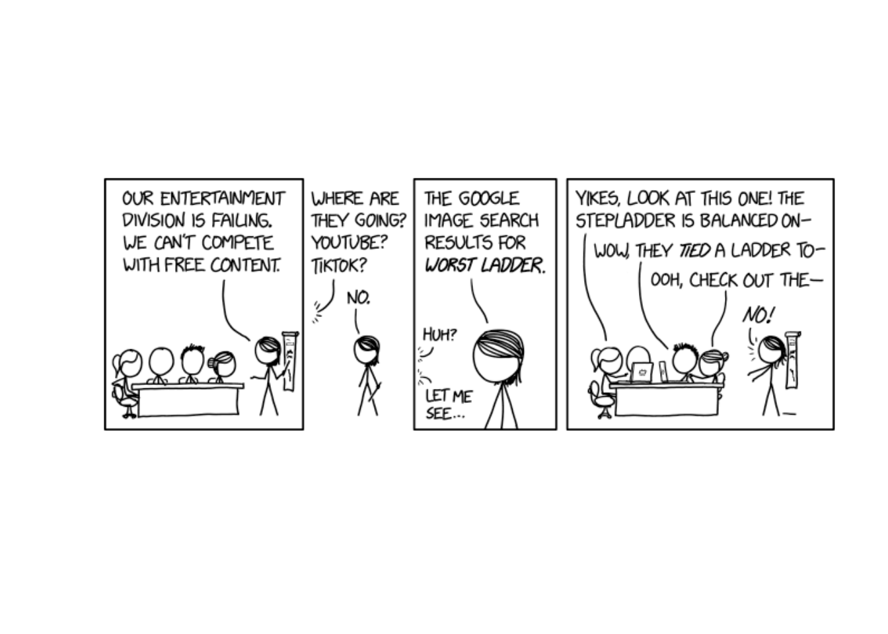 Alpha blending, or transparency, allows us to see the structure in over-plotted (crowded) charts. Here, I’ve specified that the points should have 50% opacity.
Another point to note: inside the aes() function, variables are mapped to geometric object characteristics, but outside, those same parameters can be mapped to constant values. If something is inside aes(), it should be a variable.
Base R
Base R doesn’t support alpha blending by default, so we have to load the scales package in order to get that functionality.
library(scales)
# Using constant alpha:
plot(Assault ~ Population,
col = alpha("blue", .5),
pch = 16,
data = fbiwide) 
SAS ODS Graphics
libname classdat "/home/susan/Projects/Class/unl-stat850/2020-stat850/sas/";
PROC SGPLOT data=classdat.fbiwide;
SCATTER x = Population y = Assault /
markerattrs=(size=8pt symbol=circlefilled color="blue")
transparency=0.5;
RUN;If we want to get fancy, we can map other variables to aesthetics like color, size, etc. We could explore the relationship between Population and Assault, but we’d expect that over time, observations from each state would be closely related. We could explore that by coloring each point by state (note, this doesn’t allow us to really see which states belong to which points so much as it visually associates connected points.)

Base R variable mapping
In base R, you can also create scatterplots that have different plot aesthetics, but we have to get a bit more hands-on than we did with ggplot2.
# This doesn't work because the values in Abb aren't actually colors
# and plot() doesn't handle the mapping between color and abbreviation for us
plot(Assault ~ Population, col = Abb, data = fbiwide)
Error in plot.xy(xy, type, ...): invalid color name 'AL'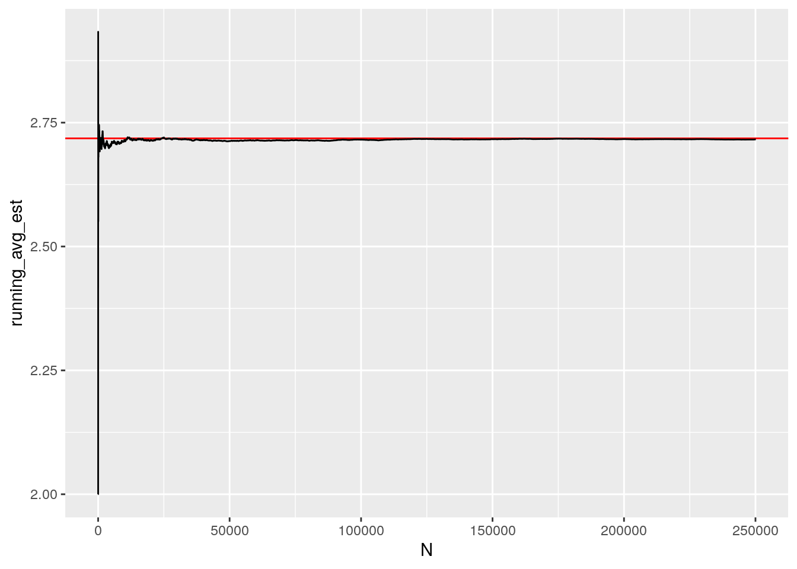
We have to specify the values of color manually for each point that we want to plot - essentially, where ggplot2 handled the scale for us, now we have to manually specify it ourselves. We could specify a legend, but in this particular case it’s unlikely to be that useful to us because the colors aren’t allowing us to identify the lines, they’re just differentiating the lines from other lines.
# We need a vector of colors equal to the number of abbreviations we have
state_colors <- rainbow(length(unique(fbiwide$Abb)))
# then we have to figure out which color goes with which abbreviation
fbiwide$Abb_factor <- factor(fbiwide$Abb)
fbiwide$state_color <- state_colors[fbiwide$Abb_factor]
plot(Assault ~ Population, col = state_color, data = fbiwide) You can use
You can use ?points to get information on all of the graphical parameters for points.
SAS ODS Graphics variable mapping
libname classdat "/home/susan/Projects/Class/unl-stat850/2020-stat850/sas/";
PROC SGPLOT data=classdat.fbiwide;
SCATTER x = Population y = Assault /
markerattrs=(size=8pt symbol=circlefilled)
group = Abb; /* maps to point color by default */
RUN;
PROC SGPLOT data=classdat.fbiwide NOAUTOLEGEND; /* dont generate a legend */
SCATTER x = Population y = Assault /
markercharattrs=(size=8)
markerchar = Abb /* specify marker character variable */
group = Abb
;
RUN;
A better way to graphically examine this hypothesis (the patterns in the data are clusters of each state’s points) might be to change the geometric object - we could use lines instead of points to show this data. In that case, we’d want to show separate lines (groups) for each state.
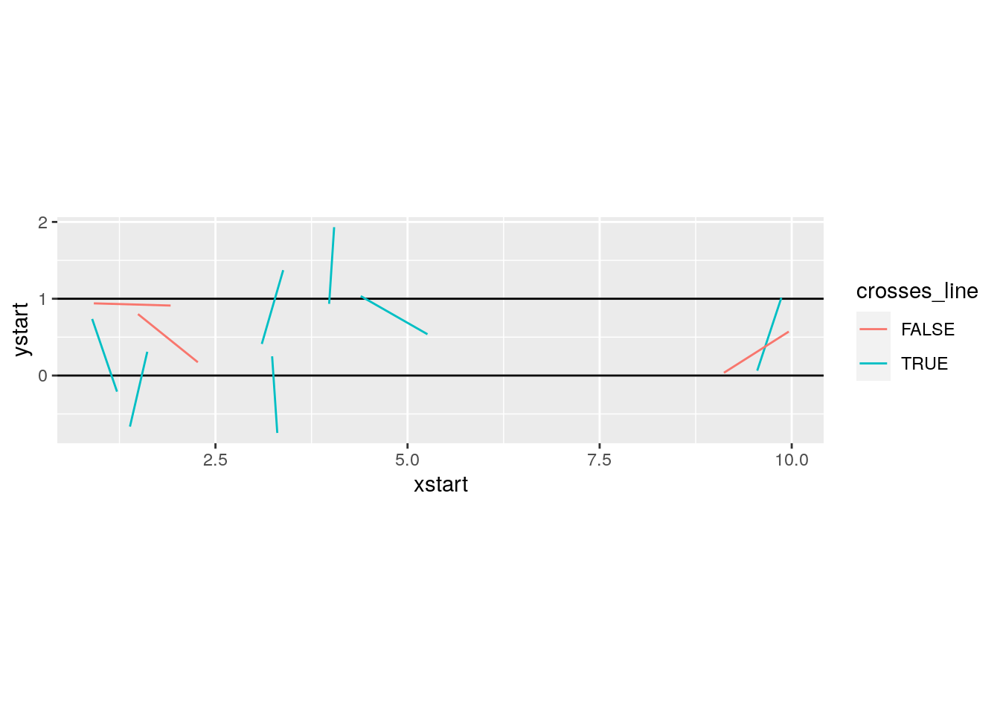
Or, we could be lazy and leave color specified; which will have the same effect. Color and most other aesthetics implicitly group the data.

One of the best parts of ggplot is that you can get away with only changing one or two things and end up with a totally different plot.
Base R line plots
If we want to make a line plot, we can do it one of two ways: we can use a for loop to plot each state’s line separately, subsetting the data each time, or, we can transform the data to wide format and plot that using the matplot function
# For loop method
plot(Assault ~ Population, pch = NA, data = fbiwide) # generate a blank plot
for (i in unique(fbiwide$Abb)) {
subdata <- filter(fbiwide, Abb == i)
lines(Assault ~ Population, data = subdata) # add the line to the plot
}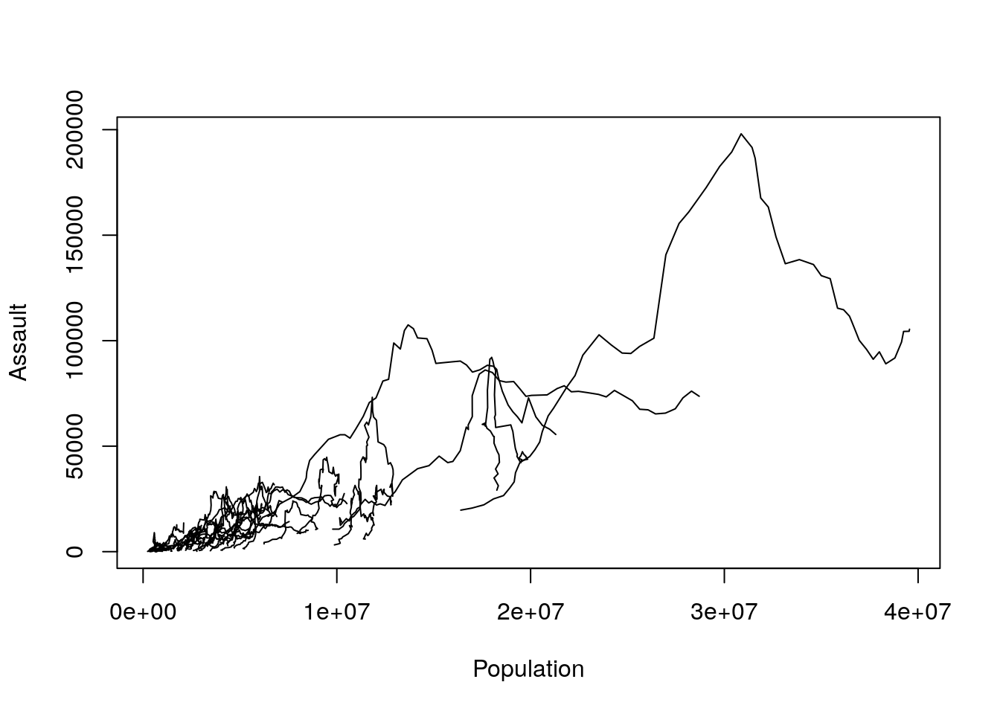
# ggplot2 code
# ggplot(fbiwide, aes(x = Population, y = Assault, group = Abb)) + geom_line()
# matplot method
subdata <- fbiwide %>%
select(Assault, Population, Year, Abb) # get cols we need
# Matrix of x values - Population
popdat <- pivot_wider(subdata, id_cols = Year, names_from = Abb, values_from = Population) %>%
arrange(Year) %>%
select(-Year)
# Matrix of y values - Assaults
assaultdat <- pivot_wider(subdata, id_cols = Year, names_from = Abb, values_from = Assault) %>%
arrange(Year) %>%
select(-Year)
matplot(popdat, assaultdat, type = "l") 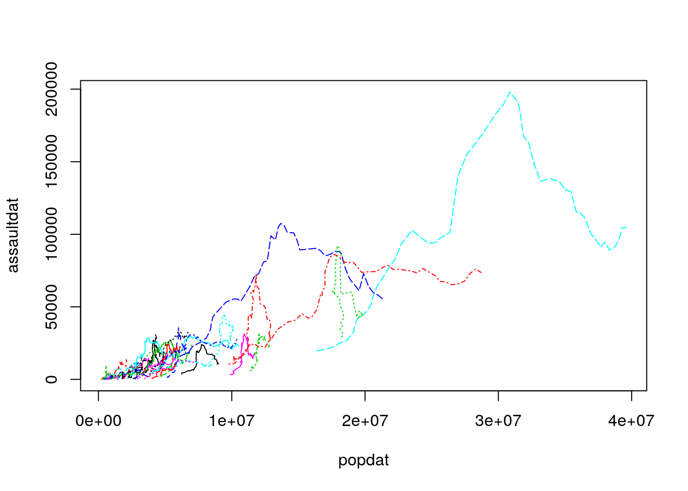
# by default, matplot uses 5 different colors and linetypes
# so that you can differentiate the lines in different columnsIf we want to add color in and have it mean something specific, it’s relatively straightforward because we already defined a new column in fbiwide that has state colors.
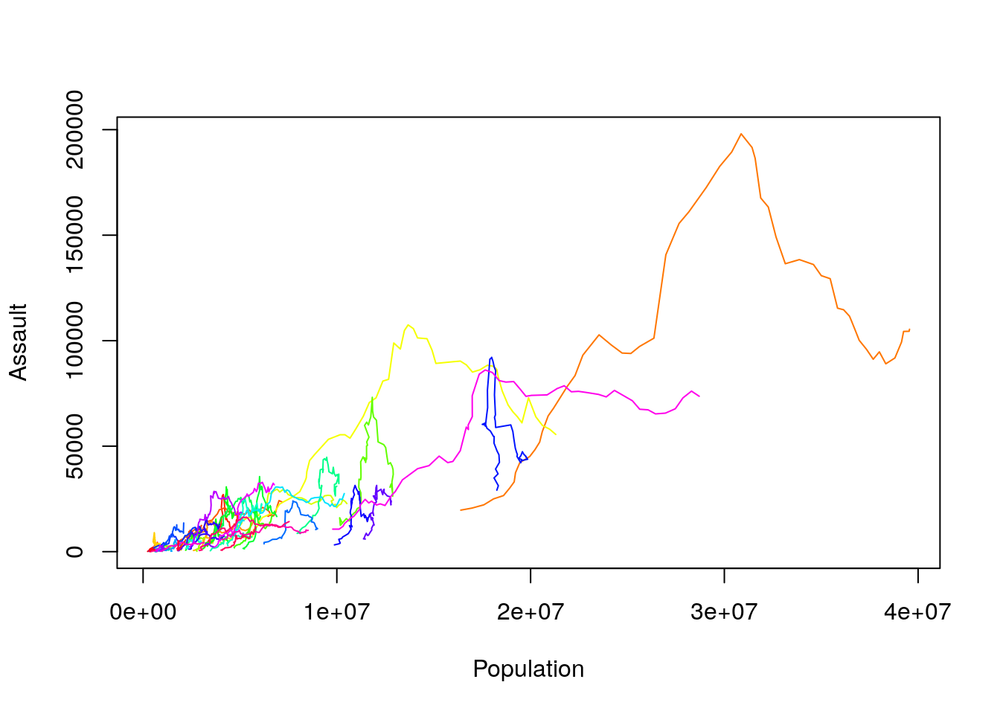SAS ODS line plots
6
7 libname classdat
7 ! "/home/susan/Projects/Class/unl-stat850/2020-stat850/sas/";
NOTE: Libref CLASSDAT was successfully assigned as follows:
Engine: V9
Physical Name:
/home/susan/Projects/Class/unl-stat850/2020-stat850/sas
8 PROC SGPLOT data=classdat.fbiwide NOAUTOLEGEND;
9 SERIES x = Population y = Assault /
10 lineattrs=(pattern=solid)
11 group = Abb; /* maps to color by default */
12 RUN;
NOTE: PROCEDURE SGPLOT used (Total process time):
real time 0.17 seconds
cpu time 0.06 seconds
NOTE: There were 2959 observations read from the data set CLASSDAT.FBIWIDE.
13
ERROR: Errors printed on page 2.So we can color our points (or lines) by a categorical variable, but that’s not all! We can also map numeric variables to aesthetics!
There are perhaps too many data points in the FBI data to effectively show size variation, so let’s temporarily switch to pokemon and examine the relationship between attack and special attack points. Let’s also map alpha to weight, so that lighter points correspond to lighter pokemon.
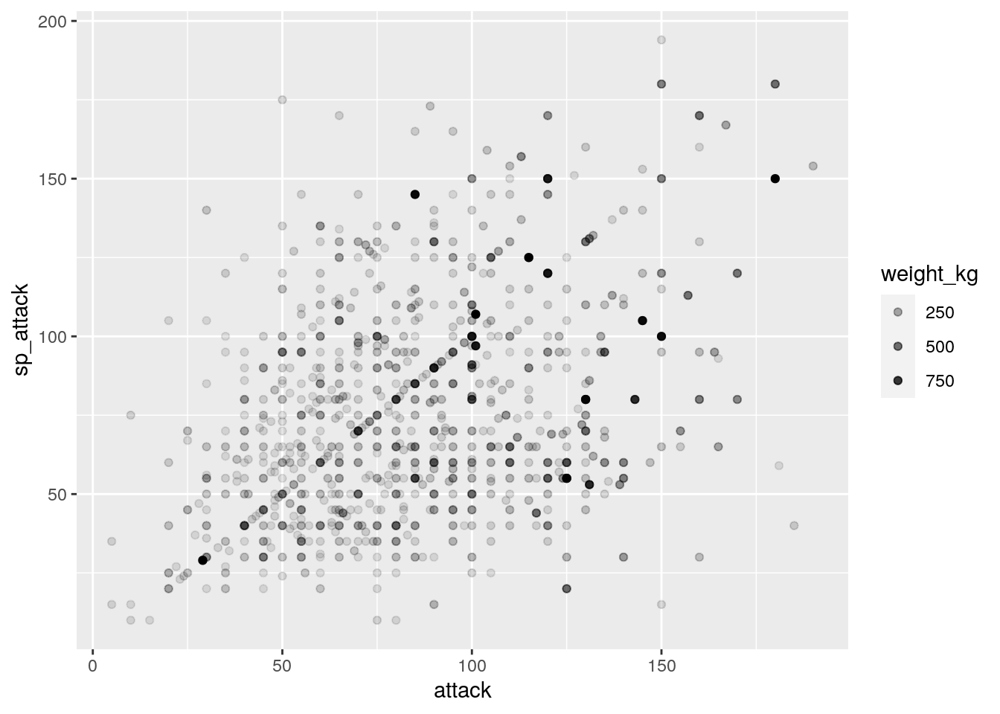
See more numeric scales
We could get fancier still and map the pokemon’s height to size.
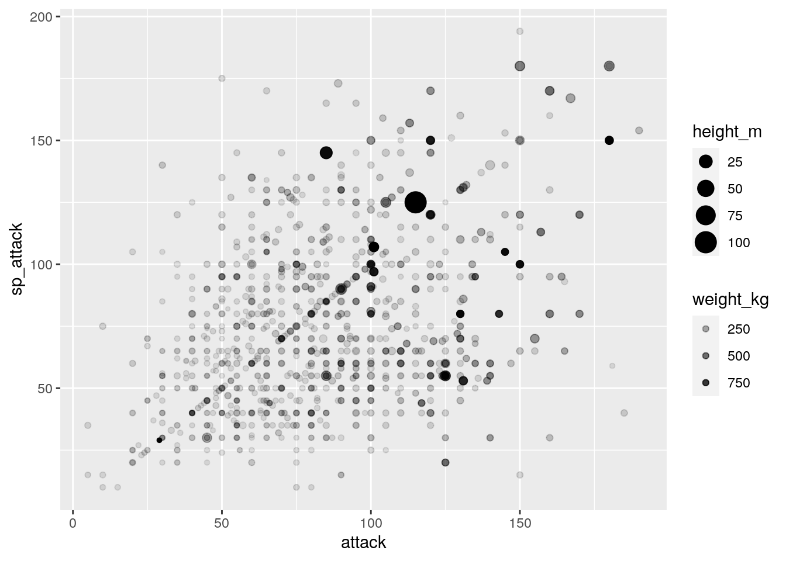 Note that ggplot2 will create separate legends for size and height by default. If we map size and alpha to the same variable, however, it will automatically combine the legends.
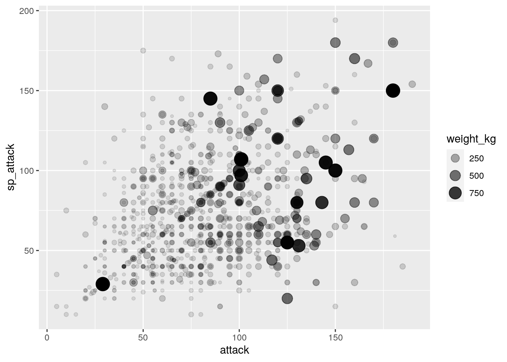Base R legends, numeric variables, and aesthetics
If we use ?points and find out that the size parameter is cex in base R, we might think something like this would work:
# cex controls the point size argument
# note the lack of a legend
# Also, we have points that are *way* too big.But, remember, in base graphics, we have to do the transformations ourselves. After some tinkering, I came up with this.

We also have to make the legend ourselves. Sigh.
plot(sp_attack ~ attack, cex = 0.5 + weight_kg/1000*3, data = poke)
legend("topleft",
legend = c(250, 500, 750, 1000), # labels
pch = 1, # must specify point shape (pch = point character)
pt.cex = 0.5 + c(250, 500, 750, 1000)/1000 * 3) # must specify cex value 
If we want to map a value to alpha, we have to make our own scale again… but it may be easier to just make a transformation function that we can pass stuff into. That way we can create the legend and the data transformation using the same function (and if we want to change the transformation, it will be much easier to do so if we only have to change things in one place).
library(scales)
# Define the transformation
wt_trans_alpha <- function(x) {
# rescale function is from the scales package
trans_x <- rescale(
x = x,
to = c(.2, 1), # don't go to 0 because then we can't see the points
from = range(poke$weight_kg, na.rm = T) # input domain
)
# alpha values have to be between 0 and 1, so we need to make sure to
# truncate the scale
trans_x %>%
pmin(., 1) %>% # don't go any higher than 1
pmax(., 0) # don't go any lower than 0
}
range(poke$weight_kg, na.rm = T) # get the range
[1] 0.1 999.9
# Make the legend variables
leg_label <- seq(0, 1000, length.out = 5) # cut weight range into 5
leg_value <- alpha("black", alpha = wt_trans_alpha(leg_label))
select(poke, attack, sp_attack, weight_kg) %>%
mutate(alpha = wt_trans_alpha(weight_kg),
color = alpha("black", alpha = alpha)) %>%
plot(sp_attack ~ attack, col = color, pch = 16, data = .)
legend("topleft",
title = "Weight (kg)",
legend = leg_label, # labels
pch = 16, # must specify point shape (pch = point character)
col = leg_value) # must specify point color using alpha() functionIf we want to do color and size simultaneously, we have to define another transformation, but we can re-use the same legend.
wt_trans_size <- function(x) {
trans_x <- rescale(
x = x,
to = c(0.5, 3),
from = range(poke$weight_kg, na.rm = T) # input domain
)
# cex values have to be >0, so we need to make sure to truncate the scale
trans_x %>%
pmax(., 0) # don't go any lower than 0
}
range(poke$weight_kg, na.rm = T) # get the range
[1] 0.1 999.9
# Make the legend variables
leg_label <- seq(0, 1000, length.out = 5) # cut weight range into 5
leg_color <- alpha("black", alpha = wt_trans_alpha(leg_label))
leg_size <- wt_trans_size(leg_label)
select(poke, attack, sp_attack, weight_kg) %>%
mutate(alpha = wt_trans_alpha(weight_kg),
color = alpha("black", alpha = alpha),
size = wt_trans_size(weight_kg)) %>%
plot(sp_attack ~ attack, col = color, cex = size, pch = 16, data = .)
legend("topleft",
title = "Weight (kg)",
legend = leg_label, # labels
pch = 16, # must specify point shape (pch = point character)
col = leg_color,
pt.cex = leg_size)SAS ODS graphics and numeric variable transformations
In order to change point size to show a different variable value, we have to use BUBBLE instead of SCATTER.
6
7 libname classdat
7 ! "/home/susan/Projects/Class/unl-stat850/2020-stat850/sas/";
NOTE: Libref CLASSDAT was successfully assigned as follows:
Engine: V9
Physical Name:
/home/susan/Projects/Class/unl-stat850/2020-stat850/sas
8 PROC SGPLOT data=classdat.poke;
9 BUBBLE x = attack y = sp_attack size = weight_kg /
10 BRADIUSMAX=10 BRADIUSMIN =2
11 transparency=0.5;
12 RUN;
NOTE: PROCEDURE SGPLOT used (Total process time):
real time 0.13 seconds
cpu time 0.03 seconds
NOTE: There were 1028 observations read from the data set CLASSDAT.POKE.
13
ERROR: Errors printed on page 2.8.3.1.1 Try it out
Explore the happy dataset, which is a selection of variables from the general social survey (?happy) related to happiness. What associations can you find between the variables? Can you use what you know about the graphics help resources to figure out how to create new plot types?
8.3.2 Syntax and General Structure: Layers
One of the main advantages of ggplot2 is that the syntax is basically consistent across very different types of plots. In base R and SAS, this is not the case - you have to look up the available options for each different plot type. In ggplot2, I might have to look up what the aesthetic names are for a specific geom, but I can guess most of the time. So let’s look a bit more into what ggplot2’s approach to graph specification is and what it allows us to do.
You’re fairly used to the syntax of the pipe by now; but ggplot works on a slightly different (but similar) concept that we’ve used implicitly up until this point. There is the intial plot statement, ggplot(), and successive layers are added using +.
You can specify a dataset and aesthetic variables in the ggplot() statement (which is what we’ll usually do), but you can also have a completely blank ggplot() statement and specify your aesthetic mappings and datasets for each layer separately. This approach is more useful when you start creating complex plots, because you may need to plot summary information and raw data, or e.g. separate tables with city information, geographic boundaries, and rivers, all of which need to be represented in the same map.
Let’s play with maps for a little bit, because they provide a good example of how ggplot layers work. This is likely to be an extended, meandering example.
pkgs <- installed.packages()
# Install any of the packages that you don't have
install.packages(setdiff(c("ggthemes", "mapdata", "maps"), pkgs))Initial data set up and exploration
library(ggplot2)
library(maps)
library(mapdata)
library(ggthemes) # theme_map
# Create a data frame of the outline of the US
us_map <- map_data("usa")
states <- map_data("state")
# Read in some data about places of worship in the US (compiled from IRS filings)
worship <- read_csv("data/Places_of_Worship.csv", guess_max = 5000)
Parsed with column specification:
cols(
EIN = col_double(),
NAME = col_character(),
STREET = col_character(),
CITY = col_character(),
STATE = col_character(),
ZIP = col_double(),
AFFILIATION = col_double(),
FOUNDATION = col_double(),
long = col_double(),
lat = col_double()
)Let’s look at the map data first:
head(us_map)
long lat group order region subregion
1 -101.4078 29.74224 1 1 main <NA>
2 -101.3906 29.74224 1 2 main <NA>
3 -101.3620 29.65056 1 3 main <NA>
4 -101.3505 29.63911 1 4 main <NA>
5 -101.3219 29.63338 1 5 main <NA>
6 -101.3047 29.64484 1 6 main <NA>It looks like we have longitude and latitude, group, and point order. What does group mean?
select(us_map, group, region) %>% unique()
group region
1 1 main
6888 2 martha's vineyard
6925 3 nantucket island
6956 4 manhattan
6973 5 staten island
6984 6 long island
7153 7 san juan island
7171 8 lopez island
7189 9 orcas island
7209 10 whidbey islandThe regions are all islands, and group is a number that corresponds to each region. This is important because if we plot polygons, we have to worry about what to do when we jump from one “island” to another (sometimes, regions might be contiguous areas, such as states or zip codes). As long as we pass in a group argument (so group = group) we should avoid most of the complications of plotting spatial data.
The state data is similarly structured:
head(states)
long lat group order region subregion
1 -87.46201 30.38968 1 1 alabama <NA>
2 -87.48493 30.37249 1 2 alabama <NA>
3 -87.52503 30.37249 1 3 alabama <NA>
4 -87.53076 30.33239 1 4 alabama <NA>
5 -87.57087 30.32665 1 5 alabama <NA>
6 -87.58806 30.32665 1 6 alabama <NA>Now, let’s look at our worship place data. The full dataset was more extensive (and much larger), so I’ve reduced the number of columns so that I’m able to put it on GitHub.
head(worship)
# A tibble: 6 x 10
EIN NAME STREET CITY STATE ZIP AFFILIATION FOUNDATION long lat
<dbl> <chr> <chr> <chr> <chr> <dbl> <dbl> <dbl> <dbl> <dbl>
1 2.92e4 ST GEORG… 523 E … SOUT… MA 2127 9 10 -71.0 42.3
2 6.36e5 MINISTER… 454 ES… LAWR… MA 1840 3 10 -71.2 42.7
3 2.03e6 CHURCH O… 569 BR… NEWA… NJ 7104 3 10 -74.2 40.8
4 2.05e6 GENERAL … 3210 S… ORCH… NY 14127 9 10 -78.7 42.8
5 1.02e7 CHILD EV… 431 CA… LIVE… ME 4254 9 15 -70.1 44.4
6 1.02e7 BIBLE SO… 105 HA… PORT… ME 4103 3 16 -70.3 43.7We have tax numbers, entity names, mailing address, affiliation, foundation, and latitude/longitude. A codebook for the affiliation and foundation information is available from the IRS.
While I’m tempted to play around with the names of the organizations a bit (for instance, how many different “First XXX Church” exist in the country?) it’s probably for the best that we keep moving.Basic map geoms
Let’s try plotting this out. Maybe we can start with just plotting the outline using geom_line?
A line geom is plotted sequentially w.r.t. the magnitude of x. That doesn’t really work for us - we want x and y to be plotted in order of the observations. To do that, we need geom_path.
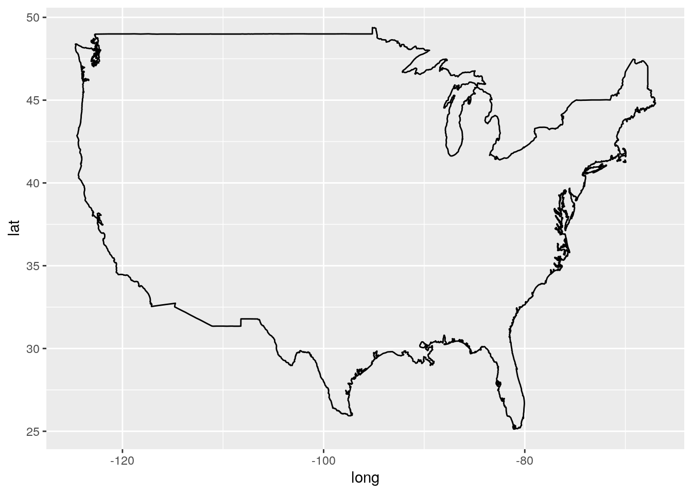
Not too bad. What if we want to fill in the country, so that it looks different from the background? To do that, we’ll need geom_polygon
# Let's make the fill white.
ggplot() + geom_polygon(aes(x = long, y = lat, group = group), data = us_map,
fill = "white", color = "black")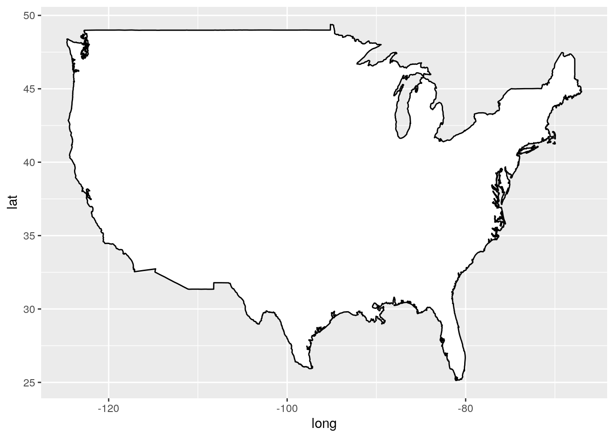
Let’s spice this up and add more layers!
Let’s plot points for the location of every place of worship (according to the IRS) in the US. First, we can plot the points by themselves:
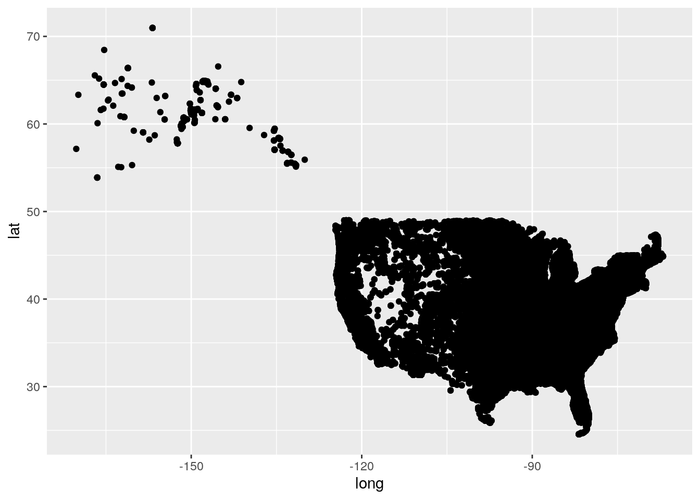
Wow. One problem we’re going to have is Alaska. Let’s go ahead and remove those points now - we could make the map more complicated, but it won’t add much to the overall value of the example.
worship_full <- worship
worship <- filter(worship, STATE != "AK")
ggplot() + geom_point(aes(x = long, y = lat), data = worship, size = .1, alpha = .1)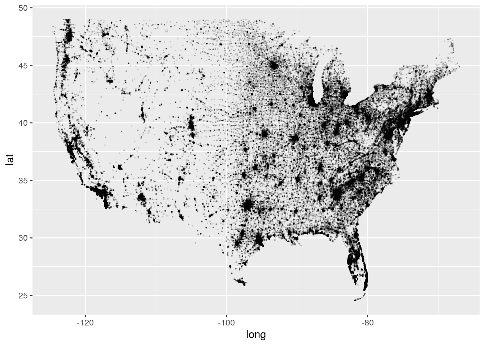
At this point it’s worth remembering the population density issue, but let’s keep moving.
Suppose we want to add our church data to our national map. We can plot our US map first, then add the points on top of it.
ggplot() +
geom_polygon(aes(x = long, y = lat, group = group), data = us_map,
fill = "white", color = "grey") +
geom_point(aes(x = long, y = lat), data = worship, size = .1, alpha = .1)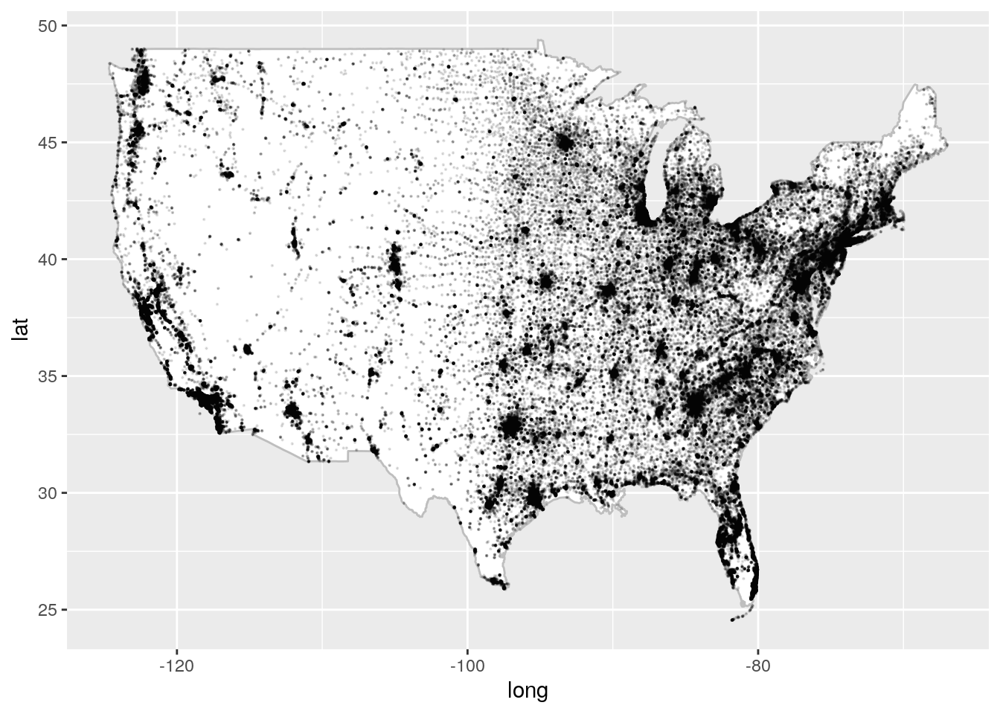
It might help to add some state information in too. We could plot states on top of the full US map, but (hopefully) the states tile the national map, so it’s better just to plot the states.
ggplot() +
geom_polygon(aes(x = long, y = lat, group = group), data = states,
fill = "white", color = "grey") +
geom_point(aes(x = long, y = lat), data = worship, size = .1, alpha = .1)It might be helpful to figure out where there are major cities - some of them are obvious, but I suspect there are certain areas where there are more churches per capita - I’ve driven through enough small towns in the South, and I have relatives in NW Iowa.
The us.cities database has all US cities over 40k people, plus state capitals of any size.
large_cities <- us.cities %>%
filter(country.etc != "AK") %>%
filter(country.etc != "HI") %>%
filter(pop > 100000 | capital == 2) %>%
mutate(type = ifelse(capital == 2, "State Capital", "City"))
layer_map <- ggplot() +
geom_polygon(aes(x = long, y = lat, group = group), data = states,
fill = "white", color = "grey") +
geom_point(aes(x = long, y = lat), data = worship, size = .1, alpha = .1) +
geom_point(aes(x = long, y = lat, color = type, size = pop), data = large_cities,
shape = 1) +
# put legend below the map
theme(legend.position = "bottom")
layer_map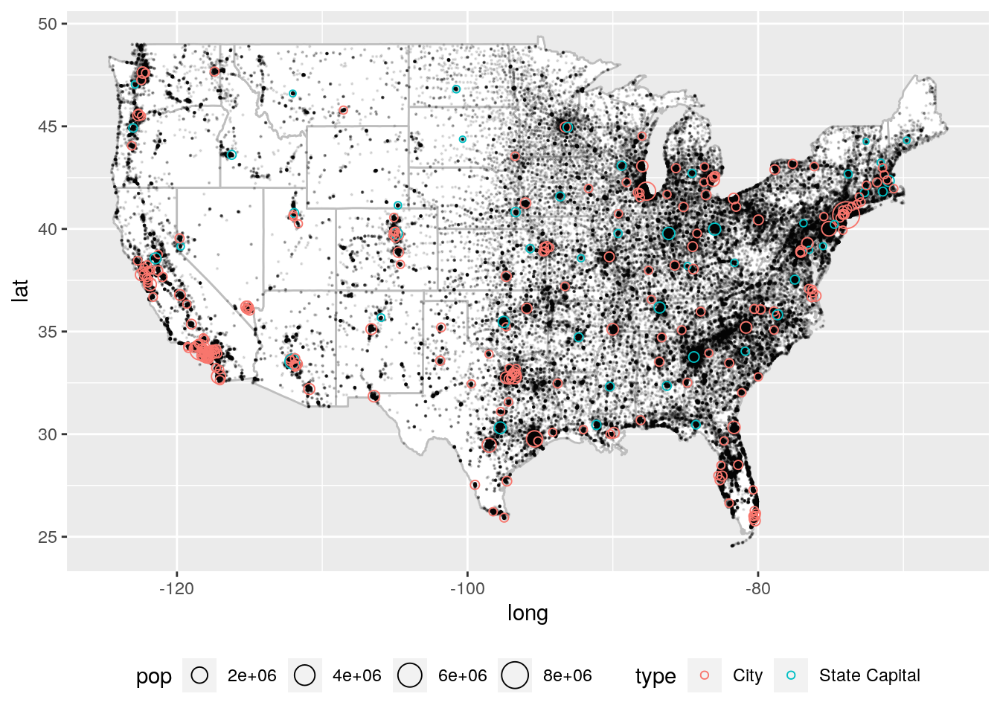
Just to examine the South in a little more depth… I wanted to know a bit more about where my grandma lives (because there are churches everywhere, or so it seems).
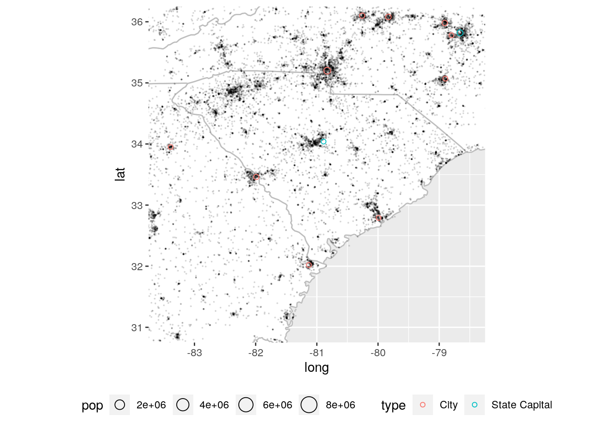 Just for context, the northwest corner of South Carolina (“upstate” to the locals) isn’t that dense, population wise, but it is certainly rich in churches. It’s nice to confirm my childhood memories with data.Try it out
Pick a few denominations or religious organizations (or even just a more generic pattern, like names starting with ST) and do some rough string matching. What spatial patterns do you detect? (This won’t be totally accurate, and doesn’t need to be, in order to paint a picture of the country’s religious affiliations and congregations)
One solution
First, let’s do a bit of string processing.
common_words <- worship %>%
pull(NAME) %>%
str_split("[- &/%]", simplify = T) %>%
as.character() %>%
table() %>%
sort(decreasing = TRUE)
common_words[1:40]
.
CHURCH OF INC BAPTIST
3427562 119645 79566 59809 25940
MINISTRIES CHRISTIAN THE GOD LUTHERAN
24719 21974 21039 17550 13004
CENTER CHRIST FELLOWSHIP COMMUNITY NEW
12385 12172 11256 10922 10915
FIRST ASSEMBLY INTERNATIONAL ST LIFE
10106 9367 9150 8992 8923
FAITH DE IN BIBLE UNITED
7780 6513 6101 5915 5682
IGLESIA METHODIST MINISTRY GRACE MISSIONARY
5610 5440 5191 5167 5141
AND TEMPLE PRESBYTERIAN GOSPEL HOPE
4873 4635 4155 4144 3915
CHAPEL OUTREACH LIVING FOR EPISCOPAL
3909 3634 3607 3491 3464 Let’s work with the following denominations: BAPTIST, LUTHERAN, METHODIST, PRESBYTERIAN, EPISCOPAL - I’ve left out CHRISTIAN, ASSEMBLY (because it could be ASSEMBLY OF GOD or a more generic term for a congreggation), and TEMPLE because it could refer to any number of religions - Jewish, Hindu, etc. This will give us a very rough categorization (e.g. there are Methodist Episcopal churches which will be counted as one and not the other, and UMC is a common abbreviation for United Methodist Church but won’t be counted as one this way).
worship <- worship %>%
mutate(type = str_extract(NAME, "(BAPTIST|LUTHERAN|METHODIST|PRESBYTERIAN|EPISCOPAL)"))
denom_churches = worship %>%
filter(!is.na(type))
ggplot() +
geom_polygon(aes(x = long, y = lat, group = group), data = states,
fill = "white", color = "grey") +
geom_point(aes(x = long, y = lat, color = type),
data = denom_churches, size = .1, alpha = .1) +
# We want to see the legend, so we have to tell ggplot to override the aesthetics
guides(color = guide_legend(override.aes = list(size = 2, alpha = 1))) +
theme(legend.position = "bottom") +
theme_map()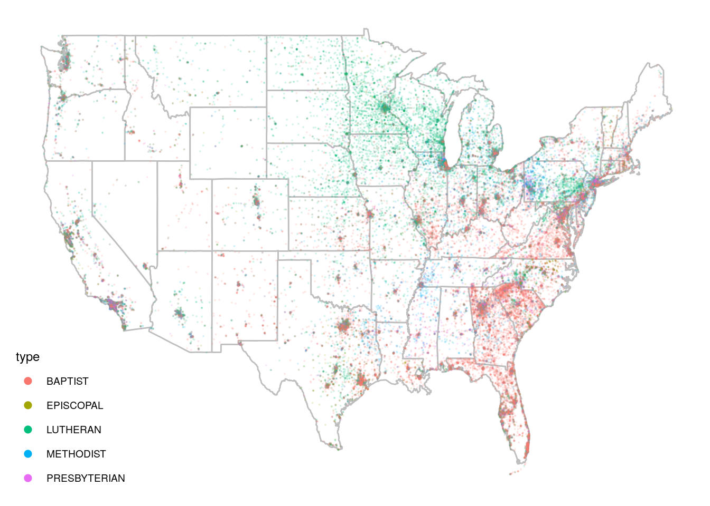
We could also look for other keywords:
bahai <- worship %>% filter(str_detect(NAME, "BAHAI"))
ggplot() +
geom_polygon(aes(x = long, y = lat, group = group), data = states,
fill = "white", color = "grey") +
geom_point(aes(x = long, y = lat),
data = bahai, alpha = .1) +
theme_map() +
ggtitle("Baha'i Organizations")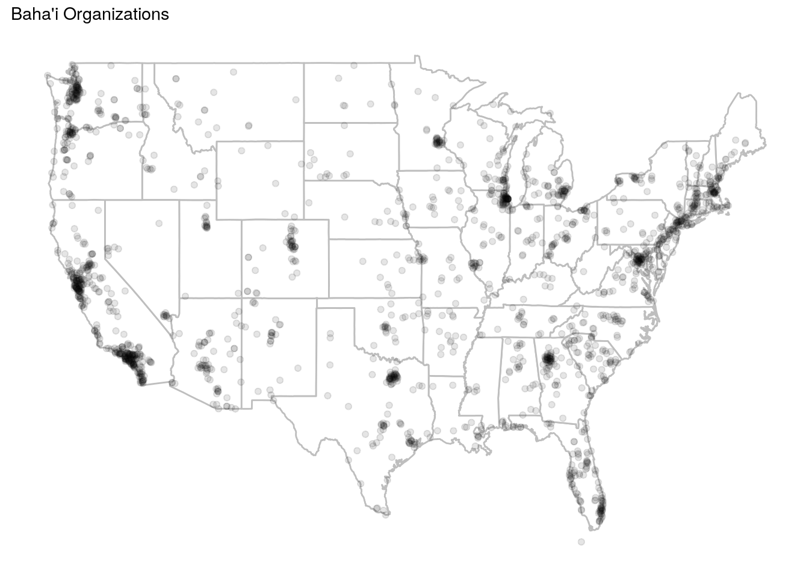
zen <- worship %>% filter(str_detect(NAME, "ZEN"))
ggplot() +
geom_polygon(aes(x = long, y = lat, group = group), data = states,
fill = "white", color = "grey") +
geom_point(aes(x = long, y = lat),
data = zen, alpha = .1) +
theme_map() +
ggtitle("Zen Organizations")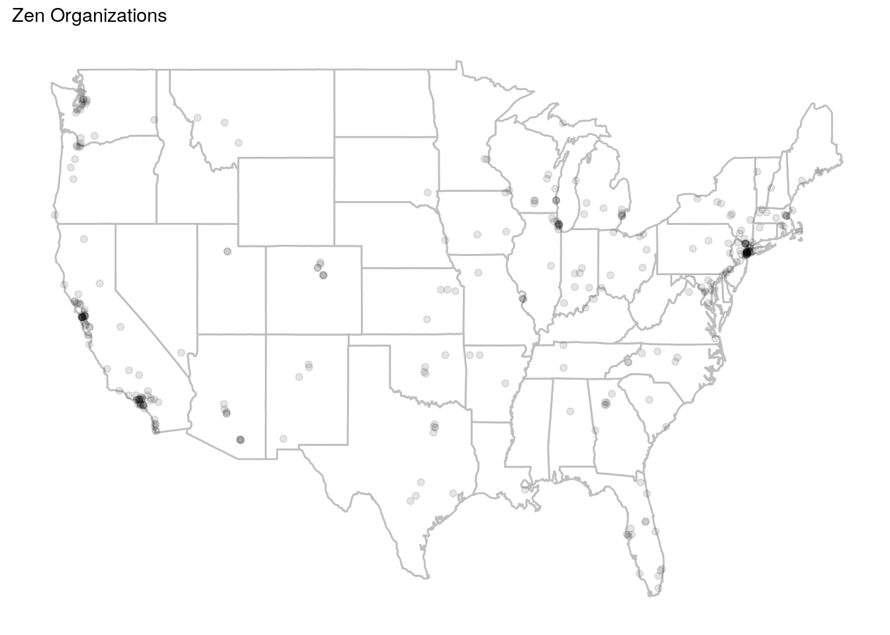
friends <- worship %>% filter(str_detect(NAME, "(MEETING OF FRIENDS)|(FRIENDS MEETING)"))
ggplot() +
geom_polygon(aes(x = long, y = lat, group = group), data = states,
fill = "white", color = "grey") +
geom_point(aes(x = long, y = lat),
data = friends, alpha = .1) +
theme_map() +
ggtitle("Quaker Religious Organizations")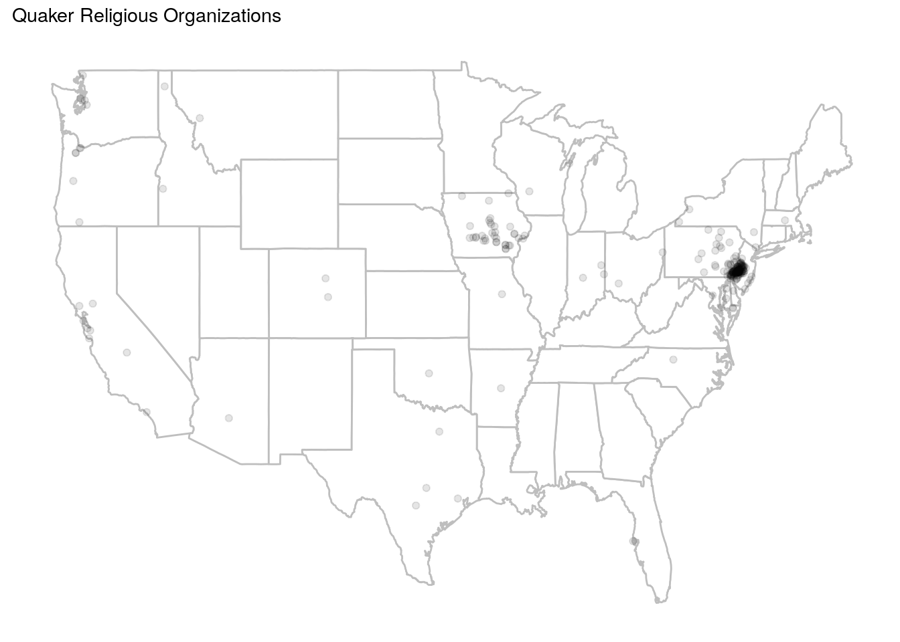
8.3.3 Statistics and Different Types of Plots
At this point, we’ve primarily looked at charts which have two continuous variables - scatter plots, and line plots. There are a number of situations where these types of charts are inadequate. For one thing, we might want to only look at the distribution of a single variable. Or, we might want to look at how a continuous response variable changes when the level of a categorical variable changes. In this section, we’ll hit the most common types of plots, but there are almost infinite variations. Sites like the Data Viz Catalogue can be useful if you’re trying to accomplish a specific task and want to know what type of plot to use.
8.3.3.1 Box Plots
Let’s look at the relative frequency of different types of crimes, putting all states on an equal scale of 100k residents so that the numbers are comparable and also meaningful.
fbi %>%
filter(Year == max(Year)) %>%
mutate(per_100k = Count/Population*100000) %>%
# make nicer names
mutate(crime = str_replace_all(Type, c("Murder.*" = "Murder",
".*[Rr]ape" = "Rape",
".*vehicle.theft" = "Vehicle Theft",
"Larceny.theft" = "Theft",
".*assault" = "Assault"))) %>%
ggplot(aes(x = crime, y = per_100k)) +
geom_boxplot() +
ggtitle(paste("Crimes per 100k people,", max(fbi$Year)))
Warning: Removed 52 rows containing non-finite values (stat_boxplot).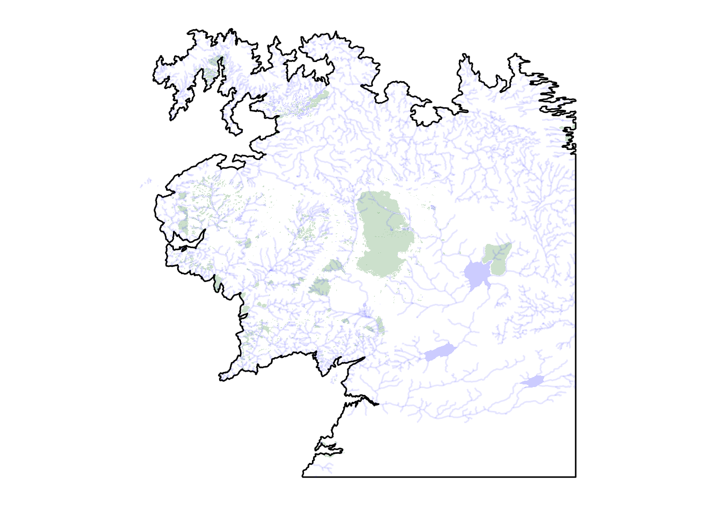
We might want to sort crimes by incidence level, because it makes the plot prettier and also gives us an ordered list of crimes in descending frequency.
tmp <- fbi %>%
filter(Year == max(Year)) %>%
mutate(per_100k = Count/Population*100000) %>%
# make nicer names
mutate(crime = str_replace_all(as.character(Type),
c("Murder.*" = "Murder",
".*[Rr]ape" = "Rape",
".*vehicle.theft" = "GTA",
"Larceny.theft" = "Theft",
".*assault" = "Assault")))
tmpsum <- tmp %>%
group_by(crime) %>%
summarize(ref = mean(per_100k, na.rm = T)) %>%
ungroup() %>%
arrange(desc(ref))
`summarise()` ungrouping output (override with `.groups` argument)
tmp <- tmp %>%
mutate(crime = factor(crime, levels = tmpsum$crime))
tmp %>%
ggplot(aes(x = crime, y = per_100k, color = Violent.crime)) +
geom_boxplot() +
ggtitle(paste("Crimes per 100k people,", max(fbi$Year)))
Warning: Removed 52 rows containing non-finite values (stat_boxplot).Boxplots in base R
8.3.3.2 Bar Charts
A bar chart is a plot with a categorical variable on one axis and a summary statistic on the other (usually, this is a count). Note that a bar chart is NOT the same as a histogram (a histogram looks very similar, but has a binned numeric variable on one axis and counts on the other). Geometrically, bar charts are rectangles; typically each rectangle will have equal width and variable height.
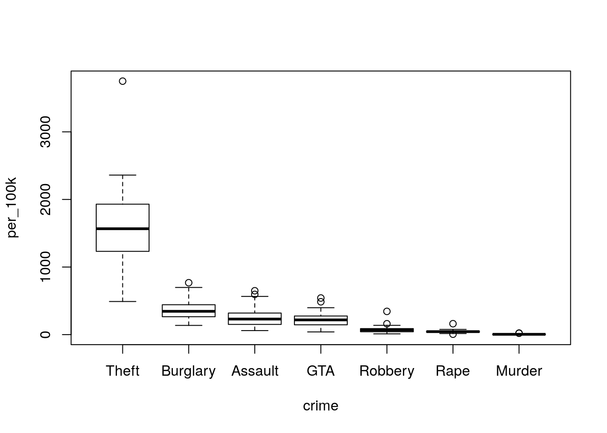
As with other types of charts, we can add more information by adding aesthetic mappings:
poke %>%
mutate(status = factor(
status,
levels = c("Normal", "Mythical",
"Sub Legendary", "Legendary") %>%
rev() # ggplot orders things backwards of how you'd want them
)) %>%
ggplot(aes(x = generation, fill = status)) +
geom_bar() +
# The default colors are awful for colorblind people (like me), so lets fix it
scale_fill_brewer(palette = "Paired")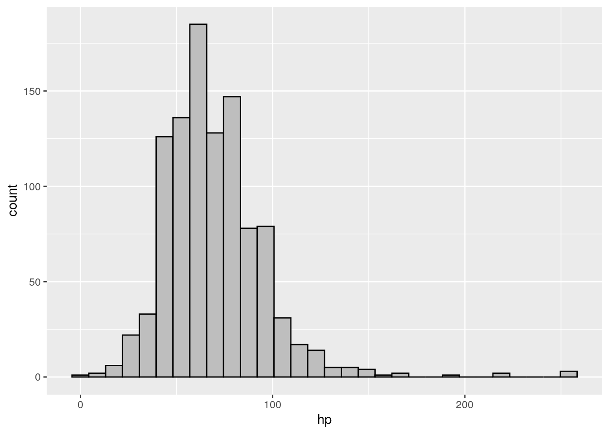 We can get different visual information from the same data, if we switch which variable is on the axis and which is the fill variable
poke %>%
mutate(status = factor(
status,
levels = c("Normal", "Mythical",
"Sub Legendary", "Legendary") %>%
rev() # ggplot orders things backwards of how you'd want them
)) %>%
ggplot(aes(x = status, fill = generation)) +
geom_bar(position = "dodge")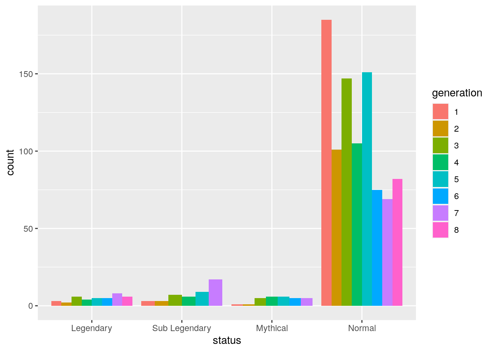
We can also get useful information by changing the statistic: what if we use the proportion of responses in each category instead of the raw count? To do this, as far as I know, we have to do at least a little bit of preprocessing, because we need a nested order of grouping factors, and ggplot doesn’t do that very well.
poke %>%
mutate(status = factor(
status,
levels = c("Normal", "Mythical",
"Sub Legendary", "Legendary") %>%
rev() # ggplot orders things backwards of how you'd want them
)) %>%
group_by(status, generation) %>%
count() %>%
group_by(status) %>%
mutate(prop = n/sum(n)) %>%
ungroup() %>%
ggplot(aes(x = status, fill = generation, weight = prop)) +
geom_bar() +
# The default colors are awful for colorblind people (like me), so lets fix it
scale_fill_brewer(palette = "Paired")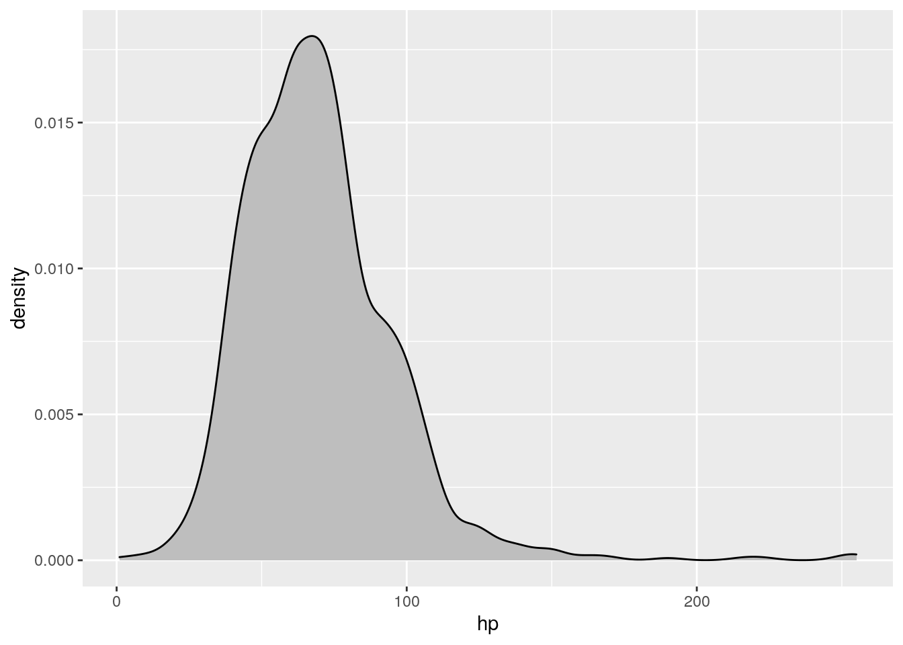
poke %>%
mutate(status = factor(
status,
levels = c("Normal", "Mythical",
"Sub Legendary", "Legendary") %>%
rev() # ggplot orders things backwards of how you'd want them
)) %>%
group_by(generation, status) %>%
count() %>%
group_by(generation) %>%
mutate(prop = n/sum(n)) %>%
ungroup() %>%
ggplot(aes(x = generation, fill = status, weight = prop)) +
geom_bar() +
# The default colors are awful for colorblind people (like me), so lets fix it
scale_fill_brewer(palette = "Paired")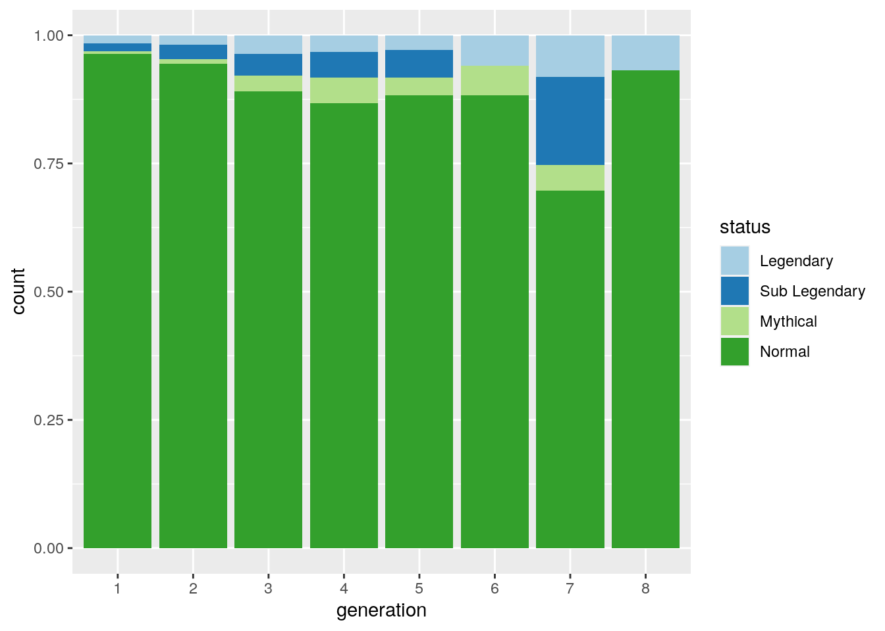
8.3.4 Small Multiples Plots
Sometimes, you want to show separate plots for each level of a factor (or a combination of factors). Often, this happens when you expect the plot’s gross shape to change - something relatively obvious. Other times, though, you might just have too much data and need to break it down somehow.
These sub-plots within a plot are called small multiples, or facets, or panel plots, depending on the software or discipline.
8.4 Good charts

Good charts are important
8.5 References
8.5.1 R graphics
8.5.2 SAS graphics
8.5.3 Types of Charts
8.5.4 Other Graphics packages
- plotnine in python (ggplot2 clone)
matplotlib in python
Tableau - student licenses are free
d3 - javascript graphics
8.5.5 Cool examples
- Holiday Graphics in SAS, and, on that same theme, Captain America in SAS
I’ll fully admit my bias here - I think ODS graphics are better than the default SAS graphics, but I still prefer the syntax and logic behind ggplot2. But, if you prefer SAS Graphics, you do you. Better you than me, is all I’m saying.↩
It’s not often you’ll find me approving of SAS graphics, but making it hard to make pie charts is definitely a point in SAS’s favor↩
This can sometimes be a pain, though, depending on the set up, because you may end up with labels that are repeated many, many times. As with any system, you just have to make sure you’re formatting your data consistent with the underlying philosophy.↩